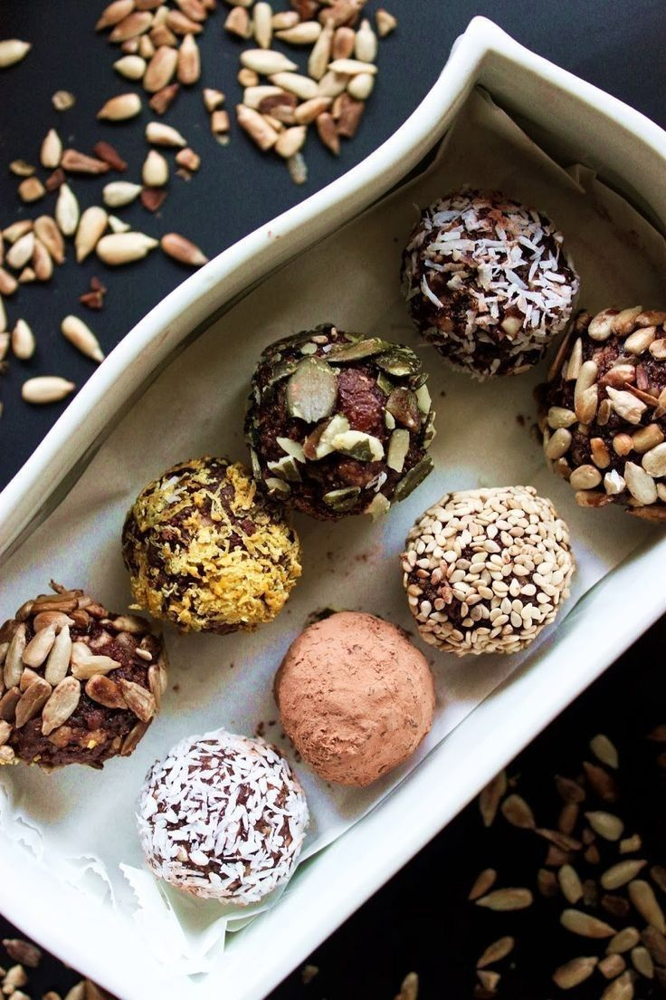

Le Trésor Sucré du Désert
Les Dates Medjool, une variété de fruit exquis cultivée depuis des siècles dans les régions arides, représentent un véritable trésor sucré du désert. Ce fruit succulent, apprécié pour sa chair moelleuse, sa douceur intense et son goût de caramel, est non seulement délicieux mais également riche en nutriments essentiels.
Plongeons dans l'histoire fascinante des Dates Medjool, explorons leurs bienfaits pour la santé et découvrons les nombreuses façons de les intégrer dans une alimentation saine et gourmande.